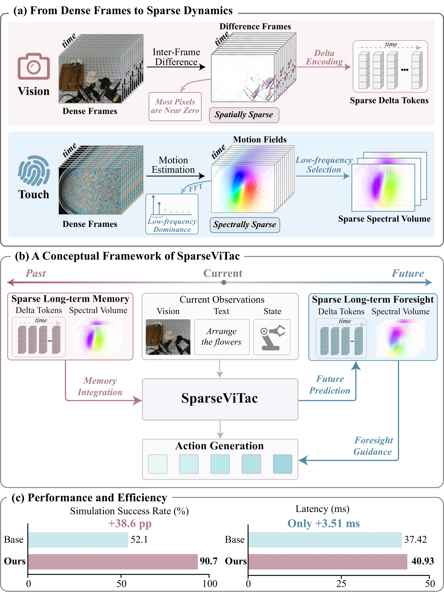
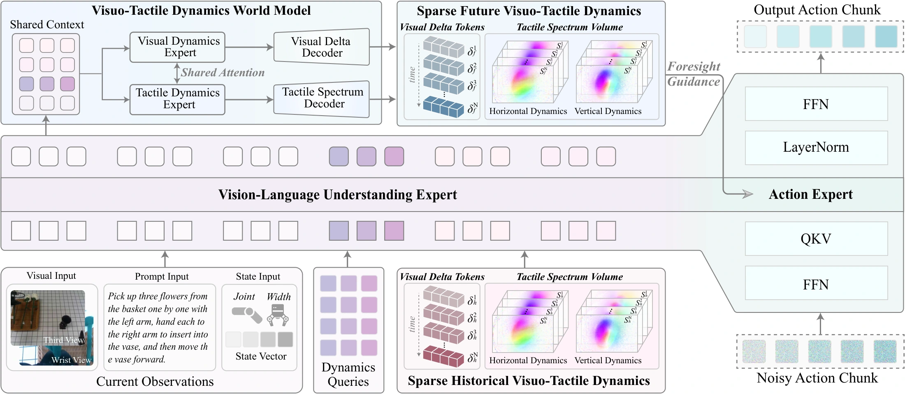
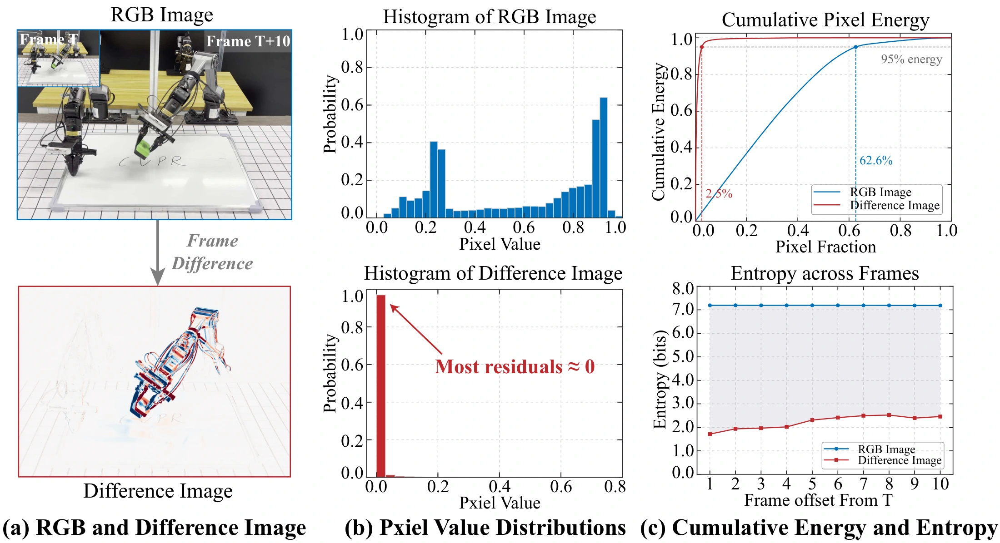
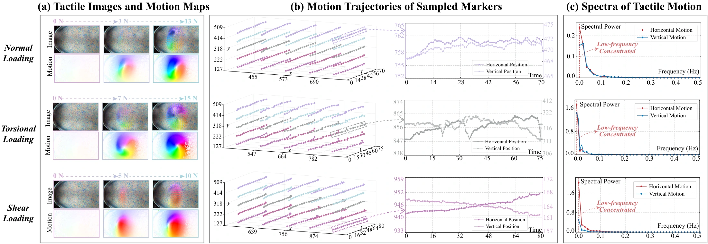
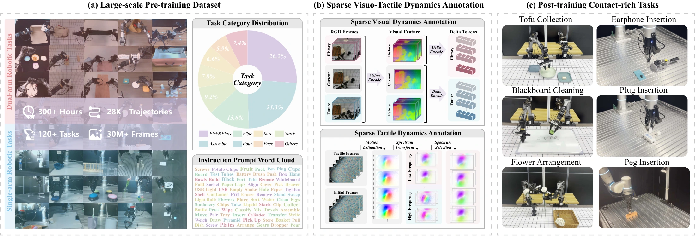
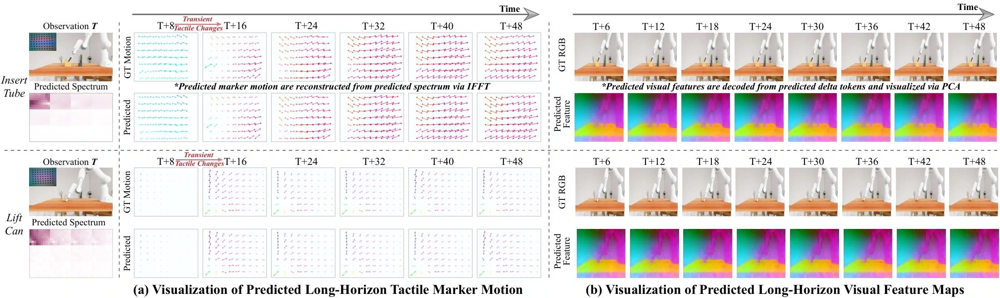
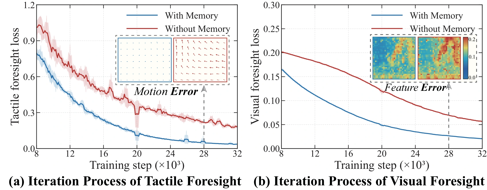
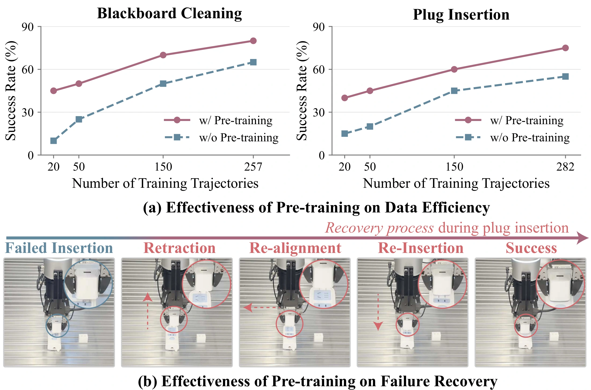

Abstract
Contact-rich manipulation relies on vision for global context and touch for local contact feedback, while complex tasks further demand memory of past interactions and foresight into upcoming ones. Existing methods either rely on current observations and short histories that limit long-term physical reasoning, or retain and predict dense frames or feature maps that incur heavy computational overhead. To address this, we propose SparseViTac, an efficient world-action model that unifies long-term memory and foresight through sparse visuo-tactile dynamics.
Our key insight is that both past and future evolutions can be compactly represented through sparse dynamics, as the current observation already captures persistent scene context while temporal changes remain spatially sparse in vision and spectrally sparse in touch. For vision, inter-frame visual changes exhibit spatial sparsity as most of the scene remains static, motivating us to compress each frame transition into a single delta token. For touch, we find that contact-induced dynamics in optical tactile sensors concentrate in the low-frequency domain, inspiring us to represent long-term tactile evolution via a spectral volume with only a few low-frequency components.
Built on these complementary representations, SparseViTac encodes extended histories into compact memory tokens to predict future dynamics in the same sparse form, allowing memory and foresight to jointly guide action generation. Furthermore, we construct a large-scale dataset with sparse dynamics annotations for pretraining our model. Extensive experiments demonstrate the superiority of our method.


Method


Why sparse dynamics?
Spatial sparsity in vision


Spectral sparsity in touch


Training, setup & tasks
Pretraining uses over 300 hours of interaction across more than 120 tasks. Sparse dynamics annotations are derived from visual transitions and tactile motion. Post-training adapts the policy to contact-rich tasks on ALOHA and Flexiv.


Long-horizon foresight




Qualitative Results
Baseline and SparseViTac executions across six real-world tasks.
ALOHA · Flower Arrangement
1 / 6Clips retain the 6× playback speed of the original comparison video.
Quantitative Results
Real-world manipulation
Success rate (%) over 20 trials per task.
| Policy | Tofu collection | Blackboard cleaning | Flower arrangement | Plug insertion | Earphone insertion | Peg insertion | Mean |
|---|---|---|---|---|---|---|---|
| π0.5 | 50.0 | 45.0 | 30.0 | 40.0 | 30.0 | 35.0 | 38.3 |
| TacFiLM | 55.0 | 60.0 | 25.0 | 50.0 | 35.0 | 45.0 | 45.0 |
| FTP-1 | 75.0 | 70.0 | 45.0 | 55.0 | 40.0 | 50.0 | 55.8 |
| SparseViTac 85.0 80.0 55.0 75.0 60.0 65.0 70.0 | 85.0 | 80.0 | 55.0 | 75.0 | 60.0 | 65.0 | 70.0 |
Simulation
Success rate (%) across ten manipulation, insertion and classification tasks.
| Policy | Lift bottle | Pull out key | Lift can | Put bottle | Insert hole | Insert tube | Grasp classify | Weight | Hardness | Roughness | Mean |
|---|---|---|---|---|---|---|---|---|---|---|---|
| ACT | 25.0 | 32.0 | 43.0 | 20.0 | 10.0 | 83.0 | 44.0 | 51.0 | 60.0 | 69.0 | 43.7 |
| π0.5 | 97.0 | 38.0 | 72.0 | 16.0 | 31.0 | 41.0 | 49.0 | 53.0 | 60.0 | 64.0 | 52.1 |
| UniVTAC-ACT | 65.0 | 41.0 | 20.0 | 30.0 | 40.0 | 68.0 | 100.0 | 53.0 | 86.0 | 61.0 | 56.4 |
| VITaL | 72.0 | 47.0 | 8.0 | 32.0 | 25.0 | 34.0 | 100.0 | 35.0 | 36.0 | 53.0 | 44.2 |
| Tactile-VLA | 97.0 | 32.0 | 15.0 | 10.0 | 41.0 | 56.0 | 20.0 | 37.0 | 55.0 | 60.0 | 42.3 |
| Dream-Tac | 66.0 | 32.0 | 50.0 | 48.0 | 38.0 | 64.0 | 93.0 | 28.0 | 80.0 | 99.0 | 59.8 |
| TacFiLM | 87.0 | 73.0 | 44.0 | 56.0 | 58.0 | 91.0 | 60.0 | 47.0 | 75.0 | 99.0 | 69.0 |
| FTP-1 | 97.0 | 48.0 | 65.0 | 47.0 | 64.0 | 79.0 | 99.0 | 61.0 | 100.0 | 100.0 | 76.0 |
| SparseViTac | 92.0 | 90.0 | 90.0 | 58.0 | 98.0 | 100.0 | 88.0 | 98.0 | 100.0 | 93.0 | 90.7 |
Memory and foresight ablation
| Configuration | Put bottle (%) | Lift can (%) | Latency (ms) |
|---|---|---|---|
| Base | 16.0 | 72.0 | 37.42 |
| Base + memory | 32.0 | 74.0 | 37.57 |
| Base + foresight | 42.0 | 77.0 | 40.24 |
| SparseViTac | 58.0 | 90.0 | 40.93 |

